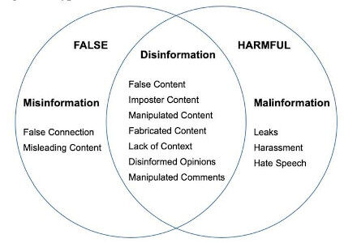
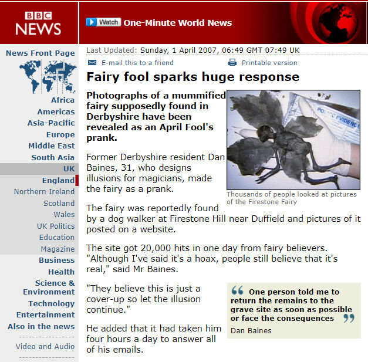

Öğrenen Sürümü
Eğitici Sürümü
Öğrenen Sürümü
Eğitici Sürümü
Modül 2: Bilgi Düzensizliği
Modülün Tanımı
Bu Modülün temel amacı, katılımcılara bilgi düzensizliği kategorileri ve türlerini tanımak ve ayırt etmek yoluyla karşılaştıklarında analitik ve eleştirel düşünme yaklaşımı sergileyebilmeleri için bilgi bozukluğunun kavramsal çerçevesini çizmektir.
İkincil amaç, bu Modülün içeriğini kendi hedef kitlelerini eğitmek için kullanmak isteyen eğitmenlere rehberlik etmektir.
Bu amaçlarla, bu modülde bilgi bozukluğunun ana kategorileri ve yaygın görülen türlerinin tanımları yanı sıra konunun nasıl öğretileceğine ilişkin yönergeler sunulmaktadır.
Bu Modülü başarıyla tamamlayanlar şunları yapabileceklerdir:
- bilgi düzensizliğini tanır
- bilgi düzensizliğinin ana kategorilerini (dezenformasyon, mezenformasyon, malenformasyon) tanımlayabilir ve birbirinden ayırt edebilir
- yaygın bilgi düzensizliği türlerini (uydurma, çarpıtma, taklit, manipülasyon gibi) tanımlayabilir ve birbirinden ayırt edebilir.
Ek olarak, bu Modülü başarıyla tamamlayan eğitmenler, bilgi düzensizliğinin nasıl öğretileceğini anlar.
Modülün Yapısı
Bu Modül aşağıdaki bölümlerden oluşur:
- Amaç, İçeriğin Tanımı ve Öğrenme Çıktıları
- Modülün Yapısı
- Öğrenenler için Yönerge
- Eğitmenler için Yönerge (hazırlık, kullanılacak yöntemler ve eğitmenler için ipuçları)
- İçerik (çalışma materyalleri ve alıştırmalar)
- Test
- Kaynakça (yararlanılan kaynaklar ve önerilen kaynaklar ile videolar)
Modülün ana hedefleri, içerik ve öğrenme çıktıları Modülün Tanımı bölümünde açıklanmıştır. Öğrenenler için Yönerge, öğrenenler için yönlendirme ve önerileri içerir. Eğitmenler için Yönerge, eğitimin farklı aşamalarında eğitmenlere rehberlik eder ve konuyu öğretirken faydalı olabilecek ipuçları sağlar. İçerik, tüm çalışma materyallerini ve ilgili alıştırmaları içerir. Test, katılımcıların kendilerini ve ilerlemelerini test edebilmeleri için hazırlanmıştır. Genellikle çoktan seçmeli veya doğru/yanlış sorularından oluşur. Kaynakça, yararlanılan kaynaklar ve önerilen kaynaklar şeklinde iki bileşenden oluşur. İçerik hazırlanırken yararlanılan ve atıf yapılan kaynaklar Kaynakça başlığı altında listelenmiştir. Ek Kaynakça, konuyla ilgili daha fazla bilgi edinmek isteyenler için okunması önerilen kaynaklar ve izlenmesi önerilen videoların bir listesinden oluşur.
Öğrenenler için Yönerge
Öğrenenlerden içeriği dikkatle okumaları, önerilen videoları izlemeleri ve alıştırmaları yapmaları beklenmektedir. Daha fazla bilgi gereksinimi duydukları konularda kaynakçalarda listelenen kaynaklara başvurabilirler. İçerik üzerindeki çalışmalarını tamamladıktan sonra, ilerlemelerini değerlendirmek için modül sonundaki testi yapmaları önerilir. Test sonuçlarına göre gerekirse çalışma materyali yeniden gözden geçirilebilir.
Eğitmenler için Yönerge
Bu bölüm, ele alınan konunun nasıl öğretileceğine ve Modül içeriğinin bu amaçla nasıl kullanılabileceğine ilişkin eğiticilere yönelik öneriler ve ipuçları içerir.
Hazırlık
Eğitim başlamadan önce görsel materyaller (resim ve video klipler) ve araştırmaya dayalı olgusal bilgilerle zenginleştirilmiş bir sunum (PowerPoint/Prezi/Canva) hazırlanması önerilir. Ayrıca bu Modüldeki örneklerin ve alıştırmaların hedef grubun aşina olduğu konulara göre uyarlanması önerilir. Mevcut durum veya iyi bilinen konularla ilgili yerel örneklerin seçilmesi, konuyu daha iyi açıklamaya yardımcı olacaktır. Ayrıca katılımcıların daha çok dikkatini çekecektir. Örnekler ne kadar tanıdık ve popüler olursa, mesaj o kadar iyi iletilecektir. Yerel (ulusal) teyit platformları, halihazırda doğrulanmış ve etiketlenmiş çok çeşitli haberler ve vaka incelemeleri için iyi bir kaynak olabilir.
Başlarken
Konuya ısındırmak amacıyla başlangıçta Kahoot veya Mentimeter gibi araçlar kullanılarak katılımcılara konuyla ilgili genel ve kısa bazı sorular (3 ile 5 soru) yöneltilebilir. Böyle bir başlangıç katılımcıların konuyla ilgili mevcut bilgi düzeyleri hakkında bilgi de sağlayacaktır. Bu amaçla kullanılabilecek sorulara bazı örnekler şunlar olabilir: Dezenformasyon nedir? Mezenformasyon nedir? Çarpıtma nedir?
Kullanılacak Yöntemler
Eğitim sırasında çeşitli öğretim yöntemleri bir arada kullanılabilir:
- Ders anlatma
- Tartışma
- Grup çalışması
- Kendini yansıtma
Eğitmenler için İpuçları
Isınma
Katılımcıları sürece dahil etmenin ve öğrenecekleri şeyler hakkında ortak beklentiler oluşturmanın etkili bir yolu, konuyla ilgili birkaç ön soru sorarak düşünme ve tartışma olanağı yaratmaktır. Bu, grup çalışması ile fikirlerin ve görüşlerin sözlü olarak tartışılması şeklinde yapılabileceği gibi bireysel olarak her katılımcının fikirlerini kağıt üzerine yazması şeklinde de yapılabilir. Etkinlik şu şekilde gerçekleştirilebilir:
- Katılımcılardan bilgi düzensizliği örnekleri vermelerini istenebilir
- Katılımcılar verdikleri örnekleri kategorilere ayırmaya ve bunların hangi yönlerden farklı olduklarını açıklamaya davet edilebilir
- Katılımcılar dezenformasyon üretilen konu alanlarını (siyaset, ekonomi, sağlık, teknoloji, sosyal yardımlar, eğlence ve ünlüler vb.) belirlemeye davet edilebilir
- Katılımcılara nerede ve ne şekilde dezenformasyonla karşılaştıkları sorulabilir (videolar, makaleler, gönderiler, vb.)
- Katılımcılara yanlış bilgiyi nasıl ayırt ettikleri sorulabilir
- Katılımcılara dezenformasyonla ne sıklıkla karşılaştıkları sorulabilir.
Tartışmalardan sonra, katılımcıların yanlış bilgilerin kasıtlı ve kasıtsız olarak yayılabildiğini (dezenformasyon ve mezenformasyon arasındaki ayrım) anladıklarından emin olmak gerekir. Katılımcılar ayrıca yanlışlık düzeylerinin, diğer bir deyişle gerçekliğin (yanlış haberlerin gerçeklere dayanma derecesinin) değişebileceğini anlamalıdır.
Dersin Amacının Belirtilmesi
Amaç netleştirilmelidir. Bu dersin amacı, dezenformasyonu hayatlarımızı ve karar verme süreçlerimizi etkileyen bir olgu olarak yansıtmaktır. Isınma sorularının ardından amaç ve hedefleri netleştirmek daha kolay olacaktır.
Ders İçeriğinin Sunulması
İçerik sunulurken katılımcılarla etkileşim içinde olmak ve onları derse aktif katılıma teşvik etmek önemlidir. Bunun için aşağıda bazı öneriler sunulmuştur:
- Dezenformasyonun bir tanımı verilmeden önce, katılımcılardan kendi tanımlarını yapmaları istenebilir.
- Yaygın bilgi düzensizliği türleri tanıtılırken, katılımcılardan gerçek hayattan örnekler vermeleri istenebilir. Örneklerin sözü edilen kategoriye girip girmediği konusunda mutlaka yorum yapılmalıdır.
- Örneklemede gerçek dünya örnekleri kullanılmalıdır. Sunulan vaka hakkında önceden mümkün olduğunca çok arka plan bilgisi edinilmelidir. Böylece katılımcılar tarafından sorulursa daha fazla ayrıntı sağlamak mümkün olabilir.
- Örnekler ele alınan kategorinin tanımına yüzde yüz uygun olmalıdır. Bazı örnekler birden fazla kategoriye girebilir ve yeni başlayanlar için bu durum kafa karıştırıcı olabilir.
- Sosyal medyadan örnekler seçildiğinde, etkinin boyutunu gösterebilmek için orijinal gönderiyi beğeniler ve yeniden paylaşımlarla sunmak faydalı olur.
- Ayrıntılı bilgi içeren bazı örnekler sunularak (gerçek dünya örnekleri yanı sıra bazı senaryolar da kurgulanabilir) katılımcılardan bunun ne tür bir bilgi düzensizliği olduğuna karar vermeleri istenebilir.
- Tüm farklı bilgi düzensizliği türleri tanıtıldıktan sonra, katılımcılardan aşağıdaki şekilde olduğu gibi tüm bu farklı türleri üç ana kategori (dezenformasyon, mezenformasyon, malenformasyon) altında sınıflandırmaları istenebilir.

Kaynak: Humprecht, Esserl & Van Aelst, 2020, p. 495
Bitirirken
Dersin kısa bir özeti yapılır ve vermek istenen en önemli mesajların tekrarlanmasını sağlayacak birkaç soru sorulur:
- Katılımcılardan, çevrimiçi olarak karşılaştıkları, ilk başta doğru gibi görünen, ancak daha sonra yanlış olduğu ortaya çıkan bir bilgiyi/haberi aktarmaları istenebilir.
- Katılımcılara hiç yanlış bilgi paylaşıp paylaşmadıklarını ve sonrasında bunu fark edip etmedikleri sorulabilir.
- Katılımcılara, yanlış bilgiden ne kadar etkilendiklerini düşündükleri sorulabilir.
- Katılımcılara, bilmeden yanlış bilgi yayan kişi ile kasıtlı olarak yanlış bilgi yayan kişinin taşıdığı sorumluluğun aynı olup olmadığı sorulabilir.
İçerik: Bilgi Düzensizliği
Giriş
“Sahte haber” kavramı, yanıltıcı içeriğin tamamını kapsamadığından (ki bunların bazıları sahte bile değildir), “bilgi düzensizliği” adı verilen yeni bir kavram ortaya atılmıştır. Bilgi düzensizliği oldukça karmaşık bir olgudur. Bazı türleri daha az zarar verici düşük seviyeli bilgi kirliliği olarak tanımlanabilirken, bazıları daha karmaşık ve son derece aldatıcıdır (Wardle & Derakhshan, 2017, p. 20; Wardle, 2019, p. 57; Wardle, 2020).
Bilgi düzensizliğini kategorize etmek, günümüz bilgi ortamının daha iyi anlaşılmasına yardımcı olur. Bu Modülde, ana kategoriler ve bu kategorilerin altında yer alan farklı bilgi düzensizliği türleri tanıtılmaktadır.
Bilgi Düzensizliğinin Ana Kategorileri
Dezenformasyon (disinformation), mezenformasyon (misinformation) ve malenformasyon (malinformation) olmak üzere üç ana bilgi düzensizliği kategorisi vardır. Bu üç kategori arasındaki fark, verilen zararın derecesi ve yanlışlığın boyutuyla tanımlanmaktadır (Wardle & Derakhshan, 2017, p. 20; Wardle, 2020). Doğru olan haberleri yanlış olanlardan ve kötü niyetle oluşturulan, üretilen ve dağıtılan haberleri diğerlerinden ayırt etmek önemlidir (Wardle & Derakhshan, 2017, p. 20).

Kaynak: Wardle, 2019, p. 9 p. 495
Dezenformasyon
Dezenformasyon, kasıtlı olarak yanlış olan ve zarar vermek amaçlı paylaşılan içeriktir (Wardle, 2019, p. 8; Wardle & Derakhshan, 2017, p. 20). Uydurma veya kasıtlı olarak manipüle edilmiş görsel-işitsel içerik, kasıtlı olarak oluşturulmuş komplo teorileri veya söylentiler bu kategoriye örnek olarak verilebilir (Staats, 2021).
Örnek: Emmanuel Macron Offshore Hesabı Açtı mı?
2017 Fransa Cumhurbaşkanlığı seçimlerinden hemen önce, sosyal medyada o zamanki adaylardan Emmanuel Macron'un Bahamalar'da gizli bir offshore hesabı olduğuna dair bir söylenti yayılmıştır. Macron'un imzası ve bankanın iletişim bilgilerini içeren sözleşme gibi çevrimiçi olarak dağıtılan belgelerin tamamının sahte olduğu kanıtlanmıştır. Bu yalan haberin amacı, Fransız seçmenleri Macron'a oy vermekten caydırmaktır (CrossCheck, May 5, 2017; Wardle & Derakhshan, 2017, p. 21).

Kaynak: CrossCheck, May 5, 2017
Mezenformasyon
Mezenformasyon, yanlış bilginin zarar verme amacı gütmeden paylaşılmasıdır. İstemeden oluşan yanılgılardır. Yanlış veya yanıltıcı olduğunun farkında olmayan bir kişi tarafından dezenformasyon paylaşıldığında, mezenformasyona dönüşür (Wardle & Derakhshan, 2017, p. 20; Wardle, 2019, p. 8). Hatalı fotoğraf başlıkları, tarihler, istatistikler, çeviriler gibi kasıtsız hatalar da bu kategoride değerlendirilir. Ciddiye alındığında hiciv bile mezenformasyon haline gelir (Staats, 2021).
Örnek: Londra’daki Müslümanlar Paris'teki Terörist Saldırıyı “Kutladılar” mı?
Fransa’da 2017 cumhurbaşkanlığı seçimlerinden hemen önce, Champs Elysees'de üç polis memuru ve bir turist bir IŞİD teröristi tarafından vurulmuş, polis memurlarından biri ölürken diğerleri ağır yaralanmıştır. Paris'teki bu saldırı, hemen hemen tüm son dakika haberlerinde olduğu gibi bir mezenformasyona ilham vermiştir (CrossCheck, April 22, 2017; Wardle & Derakhshan, 2017, p. 21).
Talihsiz olaydan bir gün sonra, aşırı sağcı bir İngiliz siyasi örgütünün lideri Paul Golding'in Twitter'da yayınladığı bir video, Londra Müslümanlarının terör saldırısını kutladığını iddia etmiştir. Söz konusu videonun aslında, 2009'da YouTube'da yayınlandığı, Pakistan'ın Londra'daki bir kriket maçındaki zaferini kutlayan bir grup Pakistanlıyı gösterdiği sonradan anlaşılmıştır. İddianın yanlış (bir dezenformasyon) olduğu ortaya çıkmış ve bu Tweet daha sonra silinmiştir. Ancak silinmeden önce 753 kez yeniden paylaşılmış ve mezenformasyona dönüşmüştür (CrossCheck, April 22, 2017).
Bu tür içeriği paylaşan kişiler nadiren zarar vermek için bunu yapmaktadır. Aslında yardımcı olma isteği ya da öfke, korku gibi duygularla hareket ederken paylaştıkları bilgileri doğrulamamakta ve eleştirel olarak değerlendirememektedirler (Wardle & Derakhshan, 2017, p. 21).

Kaynak: CrossCheck, April 22, 2017
Malenformasyon
Malenformasyon, özel kalması gereken gerçek bilgileri genellikle zarar vermek amacıyla kamusal alana taşıyarak paylaşmaktır (Wardle & Derakhshan, 2017, p. 20). Başka bir deyişle, kişisel veya kurumsal çıkar için özel bilgilerin kasıtlı olarak yayınlanması ve mahremiyetin ihlalidir (Staats, 2021). Bu terim aynı zamanda bağlam, tarih veya saat gibi gerçek bilgilerin paylaşılmadan önce kötü niyetli olarak değiştirilmesini de ifade etmektedir (Wardle, 2019, p.8).
2016 yılında Hillary Clinton'ın başkanlık kampanyasının başkanı John Podesta'nın e-posta hesabı hacklenmiş ve e-postaları Wikileaks tarafından yayınlanmıştır. Podesta, e-postaların gerçekliğini onaylamadan veya reddetmeden, hangileri olduğuna işaret etmeksizin sadece bazılarının üzerinde oynanmış olabileceğini öne sürmüştür. ABD istihbarat teşkilatları tarafından yapılan soruşturma sonucunda çoğu sıradan kampanya iletişimlerini yansıtan e-postalarla ilgili herhangi bir sahtecilik ortaya çıkmamış, ancak sızıntı başkanlık kampanyasının iç işleyişine ışık tutarak kampanyaya zarar vermiştir (Podesta emails, 2021; Wardle, 2019, p. 8).

Source: CNN: Tapper, October 18, 2016
Yaygın Bilgi Düzensizliği Türleri
Yukarıda sözü edilen üç ana kategori içerisinde, bu ekosistemin karmaşıklığının anlaşılmasına yardımcı olacak çeşitli bilgi düzensizliği türleri vardır (Wardle, 2019, p. 12; Groundview, 2018; Turcilo & Obrenovic, 2020; Tandoc, Lim & Ling, 2018).

Kaynak: Groundview, 2018
Manipülasyon
Orijinal içeriğin bir şekilde değiştirilmesidir. Aldatma amaçlı olarak orijinal içeriğin, genellikle fotoğraf veya videoların bir yönünün değiştirilmesini ifade etmektedir (Wardle, 2019, p. 46; Wardle, 2020).
Günümüzde görüntülerin manipülasyonu, dijital teknolojilerin ilerlemesi ve güçlü görüntü işleme yazılımları sayesinde yaygın bir uygulama haline gelmiştir. Etkisi basitten karmaşığa değişebilmektedir. Basit değişiklikler, renk tonlamasını değiştirilmesi ve bazı küçük öğelerin silinmesini içerebilir. Daha kapsamlı değişiklikler ise bir görüntüden bazı öğelerin kaldırılmasını veya eklenmesini içerebilir (Tandoc, Lim & Ling, 2018, p. 144). Gerçek içeriğe dayandığı için etkisi güçlü bir uygulamadır (Wardle, 2019, p. 46; Wardle, 2020).
İleri düzey bir manipülasyon örneği, ABD’de Florida'daki okul saldırısından kurtulan lise öğrencisi Emma Gonzalez ve üç akranını hedef alan manipülasyondur. Teen Vogue dergisi tarafından hazırlanan ve Twitter'da yayınlanan videoda Gonzalez bir silah hedefini ortasından yırtmaktadır. Manipüle edilmiş videoda ise silah hedefi ABD Anayasası ile değiştirilmiştir (Wardle, 2019, p. 47).

Source: Ansari, March 25, 2018
Uydurma
Bu kategori, hiçbir gerçeğe dayanmayan ve %100 uydurma olan içeriği tanımlamaktadır (Wardle, 2019, p. 52; Wardle, 2020; Tandoc, Lim & Ling, 2018, p. 143).
Örnek: Kanada'da Parkta Bir Kartal Bebeği Kapmaya Çalıştı mı?2012 yılında MrNuclearCat adlı kullanıcı tarafından YouTube'da yayınlanan bir video, bir kartalın aşağı doğru süzülerek bir bebeği yerden kaptığını ve birkaç saniye sonra düşürdüğünü göstermektedir. İki günde 2,7 milyondan fazla görüntülenen videonun, izleyicileri başarılı bir şekilde kandırabilecek içerik oluşturmak için verilen bir ödevin parçası olarak bir Montreal tasarım kolejinin üç öğrencisi tarafından oluşturulduğu ortaya çıkmıştır. Ancak durum anlaşılana kadar video 45 milyondan fazla görüntülenmiştir (Wardle, 2019, p. 53). Hem kartal hem de bebek 3 boyutlu animasyonda yaratılmış ve daha sonra filme entegre edilmiştir (Stanglin, December, 19, 2012).

Kaynak: Stanglin, December, 19, 2012
Deepfake
Deepfake, uydurma içeriğin başka bir örneğidir. Bir kişinin yüzünün ve sesinin başka biriymiş gibi görünecek şekilde dijital olarak değiştirilmesi ile o kişinin hiç yapmadığı şeyleri yapar veya söylemediği şeyleri söyler göründüğü videolar üretmek için kullanılmaktadır (Wardle, 2019, p. 52; Wardle, 2020). Deepfake, yüksek aldatma potansiyeline sahiptir, oluşturulurken makine öğrenimi ve yapay zeka gibi güçlü tekniklerden yararlanılmaktadır (Deepfake, 2021).

Kaynak: Deepfake, 2021
Rusya Devlet Başkanı Vladimir Putin’in deepfake’i, partizan olmayan bir grup tarafından demokrasinin ne kadar kırılgan olduğunu göstermek için oluşturulmuştur (Deepfake, 2021). Bu video, çekimin gerçek olmadığını detaylandıran bir kapanış yorumu içermektedir, ancak elbette bu durum diğer deepfake’ler için geçerli olmayabilir.
Çarpıtma
Bilginin yanıltma amaçlı kullanımı yeni değildir ve hem gazetecilikte hem de siyasette her zaman bir sorun olmuştur. Bir tartışmayı desteklemek için bir alıntıdan belli bir bölümün seçilmesi, belirli bir iddiayı destekleyen istatistikler oluşturulması, bir tartışmayı baltaladığı için bir şeyi kapsam dışı bırakma veya bir bir fotoğrafı amaca uygun kırpma gibi birçok biçimde olabilir (Wardle, 2019, p. 24; Wardle, 2020).
Örnek: UNESCO, İsa'nın Doğum Yerini Miras Alanları Listesinden Çıkardı mı?
Bir Facebook gönderisinde, İsa'nın doğum yeri olarak tanınan Doğuş Kilisesi'nin UNESCO tarafından Dünya Mirası Listesi'nden çıkarıldığı iddia edilmiştir. UNESCO, 2012 yılında, su sızıntılarından zarar gördüğü için kiliseyi Tehlike Altındaki Dünya Mirası Listesine eklemiş, yapı, 2019'da kapsamlı onarıcı çalışmalardan sonra "tehlike altında" listesinden çıkarılmıştır. Asıl başlıktaki tehlike altında ifadesini çıkaran ve viral olan Facebook gönderisi büyük öfke yaratmıştır (Get Smart About News, May 4, 2021).

Bağlamdan Koparma
Bu kategori, orijinal ancak yeniden çerçevelenmiş ve yanlış bağlamsal bilgilerle paylaşılmış içeriği tanımlamak için kullanılmaktadır. Bu genellikle bir son dakika haber eski görüntülerle paylaşıldığında olur. Ancak eski haberler yeni gibi tekrar paylaşıldığında, başlık potansiyel olarak hala güncel olaylarla örtüştüğünde de olabilir (Wardle, 2019, p. 28; Wardle, 2020).
Örnek: Küresel Isınma Protestocuları Hyde Park'ta Çöp Yığınları mı Bıraktı?
Nisan 2019'da sosyal medya kullanıcıları, Londra'daki Hyde Park'taki çöp yığınlarını gösterdiği iddia edilen görüntüleri paylaşmaya başlamıştır. Bu gönderilerin çoğunda çöp yığınlarının “Extinction Rebellion” grubu tarafından düzenlenen küresel ısınma protestosu etkinliğinden sonra bırakıldığı iddia edilmiştir. Aslında, söz konusu fotoğrafların hiçbiri küresel ısınma protestosunun sonrasını göstermemektedir. Sağdaki fotoğraf Mumbai, Hindistan'da çekilmiştir. Soldaki fotoğraf Hyde Park'taki çöp yığınlarını göstermekle birlikte küresel ısınma protestosunun değil, başka bir olayın ardından çekilmiştir (Evon, April 23, 2019).

Kaynak: Evon, April 23, 2019
Hatalı İlişkilendirme
Oldukça yanıltıcı ve sansasyonel başlıklar, görseller veya alt yazılar aracılığıyla dikkat çekmek ve tıklamaları artırmak için kullanılan tıklama tuzağı adı verilen bir tekniktir (Wardle, 2019, p. 20; Wardle, 2020). Günümüzde görüntülenme oranlarını artırma amaçlı tıklama tuzaklarında bir artış yaşanmaktadır (Chen, Conroy & Rubin 2015). Zararı az olsa da, insanların haberlere olan genel güvenini sarstığı ve haberle olan ilişkisini olumsuz etkilediği için bir tür bilgi düzensizliği olarak değerlendirilmektedir (Wardle, 2019, p. 20; Wardle, 2020).
Örnek: Covid'siz Bir İtalyan Kasabasında Bir Sterline Ev Almak İster misiniz?
Kim sadece bir sterline İtalya'da bir ev satın almak istemez ki? Birçok kişi merak amacıyla bu linke tıklayabilir. Tıkladıklarında ise, 1 sterlin ile birlikte, bu terk edilmiş evlerin zorunlu olan tadilatı için ödenmesi gereken binlerce sterlin, yıllık sigorta ücreti ve alıcının verilen süre içinde evi yenilememesi durumunda büyük para cezası olduğu bilgisini edinmektedirler (The Sun: McGuire, June 11, 2020; Saavedra, 2020).

Taklit
Bu kategori, gerçek kişi, kurum veya kaynakların kimliğine bürünmeyi ifade etmektedir. Örneğin, yanlış içeriğin yanında iyi bilinen bir markanın veya ismin logosu kullanılmaktadır. İnsanlar içerik değerlendirmesinde genellikle içeriğin zaten tanıdıkları ve güvendikleri bir kuruluş veya kişi tarafından oluşturulmuş olmasını baz alırlar. Bir habere (metin, fotoğraf veya video) güvenilir bir haber kuruluşunun logosunu veya tanınmış bir şahıs veya gazetecinin adını eklemek, insanların içeriğe kontrol etmeden güvenme olasılığını artırır (Wardle, 2019, p. 34; Wardle, 2020).
Örnek: Macron'un Fransa Başkanlığı için Yürüttüğü Kampanya Suudi Arabistan Tarafından mı Finanse Edildi?
2017'de Belçika gazetesi Le Soir'in sahte bir versiyonu, Macron'un Suudi Arabistan tarafından finanse edildiğini iddia etmiştir. Daha sonra kaldırılan taklit site sadece söz konusu gazetenin sitesiyle aynı yazı tipini, tasarımı ve sayfa düzenini kullanmakla kalmamış, aynı zamanda tüm bağlantıları kullanıcıları gerçek Le Soir sitesine yönlendirmiştir. Le Soir'in resmi web sitesi, kısa sürede Macron ile ilgili bu haberin kendi haber kanallarından gelmediğini duyurmuştur (CrossCheck, March 2, 2017).
Taklit siteden gelen bu haber, Macron'un rakibi Fransız parlamenter ve aşırı sağ cumhurbaşkanı adayı Marine Le Pen'in yeğeni Marion Maréchal-Le Pen tarafından Twitter'da paylaşılmış, Marion Maréchal-Le Pen, tweetini yayınlandıktan yarım saat sonra silmiştir (CrossCheck, March 2, 2017).

Kaynak: CrossCheck, March 2, 2017
Komplo Teorileri
Bilgi düzensizliği listesine komplo teorileri de eklenebilir. Komplo teorileri, önemli olay ve durumları, gizli ve güçlü kişi ve grupların kötü niyetli eylemleri olarak açıklamaya çalışır (Douglas, 2021, s. 270). İncelenebilecek kanıtlarla desteklenmezler, ancak bu durum, insanların söz konusu teorilere inanmalarını engellemez (Lewandowsky & Cook, 2020, p. 3). Örneğin, Amerikalıların üçte birinden fazlası küresel ısınmanın bir aldatmaca olduğuna inanırken yarısından fazlası Lee Harvey Oswald'ın John F. Kennedy suikastinde tek başına hareket etmediğine inanmaktadır (Douglas, Sutton & Cichocka, 2017, s. 538).
Küresel bir pandeminin patlak vermesiyle birlikte, herhangi bir tıbbi kanıtı olmayan bir dizi temelsiz ve asılsız komplo ve kanıtlanmamış alternatif COVID-19 tedavi iddiaları sosyal medya aracılığıyla hızla yayılmıştır (Canales, 2020).
Örnek: Coronavirüs Çin'in Biyolojik Savaş Programıyla Bağlantılı Bir Laboratuarından mı Sızdı?
26 Ocak 2020'de Washington Times'da Coronavirüs'ün Çin'deki bir laboratuvardan kaynaklanmış olabileceğini iddia eden bir haber yayınlanmıştır. İddia bilim adamları tarafından çürütüldükten sonra, 25 Mart 2020'de Washington Times'ın editörü, Çin dışındaki bilim adamlarının SARS-CoV-2 virüsünü inceleme şansı bulduğunu ve laboratuvarda üretildiğine dair bir belirti bulamadıklarını açıklayan bir not yayınlamıştır. Bir laboratuvarda üretilmiş veya kasıtlı olarak manipüle edilmiş olduğu kanıtlanamamasına rağmen, virüsün kaynağının belirsizliğini koruduğu ve uzmanların bir Çin laboratuvarından sızmış olup olmadığını tartışmaya devam ettiği bilgisi de nota eklenmiştir (Gertz, January 26, 2020). Açıklama notu, orijinal komplo teorisini çürütmekle birlikte, tartışmayı diğer komplo teorilerine açık bırakmaktadır.

Kaynak: Gertz, January 26, 2020
Hiciv ve Parodi
Genellikle haber hicvi ve haber parodisi bilgi düzensizliği tipolojisine dahil edilmez. Çünkü yanıltmak veya zarar vermek gibi bir niyetleri yoktur. Ancak insanları kandırma potansiyeline sahiptirler. Paylaşıldıklarında ve yeniden paylaşıldıklarında, içeriğin orijinal bağlamı ve ipuçları kaybolur. Çoğu zaman, insanlar içeriğin hiciv veya parodi olduğunun farkına varmazlar ve bunun doğru olduğuna inanırlar. Bazen dezenformasyon ajanları, içeriğin teyit edilmeyeceğinden emin olmak ve bu içerikten kaynaklanan herhangi bir zararı mazur göstermek için kasıtlı olarak içeriği hiciv olarak etiketlerler (Wardle, 2019, p. 14; Wardle, 2020).
Parodi ve hiciv, izleyici çekmek için mizaha dayanmak gibi birçok özelliği paylaşsa da, aralarında bazı farklılıklar vardır. Hiciv, izleyicilere haber güncellemeleri sunmak için genellikle mizah veya abartı kullanan eğlence haber programlarına atıfta bulunur. Parodi, ana akım haber medyasını ve sunum formatını taklit eder, ancak mizahı enjekte etmek için gerçek olmayan (hayali) bilgileri kullanır (Tandoc, Lim & Ling, 2018, p. 141-142).
Örnek: Kuzey Kore Lideri Kim Jong-Un, 2012'de Yaşayan En Seksi Erkek Seçildi mi?
Amerikan parodi web sitesi Onion, Kim Jong-Un'un 2012'de yaşayan en seksi erkek seçildiğini iddia eden bir haber makalesi yayınlamıştır. Onion bazen gerçek haber siteleriyle karıştırıldığı için bu haber Çin’in ana haber sitelerinde yer almıştır (BBC, November 28, 2012).

The Onion, Nov. 11, 2012 < Source > The Guardian, Nov., 27, 2012
Bunun gibi durumlarda ve 1 Nisan gibi parodi öğelerinin yaygın olarak ortaya çıktığı durumlarda, insanlar hilelere kapılabilmektedirler.
Örnek: İnsanlar "Mumyalanmış Peri" 1 Nisan Şakasına İnandılar mı?
2007'de Birleşik Krallık'ta bir adam web sitesinde 1 Nisan şakası olarak hazırladığı bir "mumyalanmış peri" fotoğrafı yayınlamıştır. Bir günde siteyi 20.000 kişi ziyaret edince senaryoyu kendisinin uydurduğunu ve bunun sadece bir şaka olduğunu açıklamasına rağmen birçok kişi onu gerçeği örtbas etmekle suçlamış ve mumyanın gerçek olduğu konusunda ısrar etmiştir (BBC, April 1, 2007). Bu olay, ne kadar gülünç görünürse görünsün kamusal alana bir kez girdikten sonra bilginin ciddiye alınabileceğini kanıtlamaktadır (Swire-Thompson & Ecker, 2018).

Source: BBC, April 1, 2007
Sponsorlu İçerik
Gerçek haber kılığında reklam malzemeleri ve haber gibi yayınlanan basın bültenleri de bazen bir tür bilgi düzensizliği olarak tanımlanmaktadır. Bu durum, halkla ilişkiler uzmanlarının gazetecilerin uygulamalarını ve/veya haber medyası görünümünü benimsemesinin bir sonucudur. Bazen video haber bültenleri (halkla ilişkiler firmaları tarafından bir ürünü, bir şirketi veya bir fikri satmayı veya tanıtmayı amaçlayan önceden paketlenmiş video bölümleri olarak tanımlanır), gerçek bir haber raporuna dahil edilmek üzere televizyon haber kuruluşlarına dağıtılır. İçeriğin kullanımı haber ajansları tarafından belirlense de, kökeninin belirsiz olması, izleyicileri üretilen haberlerin tamamen önyargısız olduğuna inanmaya yönlendirebilir (Tandoc, Lim & Ling, 2018, p. 145-146).
Propaganda
İçeriğin, tutumları, değerleri ve bilgiyi yönetmek için kullanıldığı durumları ifade eder (Groundview, 2018). Propaganda, kamuoyu algılarını etkilemek için genellikle siyasi bir varlık tarafından oluşturulan haber hikayelerini ifade eder. Amaç, bir şahsa, kuruluşa veya hükümete fayda sağlamaktır. Reklama benzer şekilde, propaganda genellikle gerçeklere dayanır, ancak belirli bir yönü veya bakış açısını destekleyen önyargıları içerir. Haber ve yorumun bu şekilde harmanlanmasında amaç genellikle bilgilendirmek yerine ikna etmektir (Tandoc, Lim & Ling, 2018, p. 146-147).
Örnek: Malezya Uçağını (Boeing MH17) Ukrayna mı Vurdu?
14 Kasım 2014'te, resmi bir Rus haber kanalı olan Channel One (Perviy Kanal), Ukraynalı bir jet avcı uçağının Malezya yolcu uçağına (MH17) füze ateşlediğini iddia eden bir hava fotoğrafı sunmuştur. Bu fotoğrafın amacı Batı'da MH17'nin doğu Ukrayna'da Rus destekli ayrılıkçılar tarafından ateşlenen bir BUK füzesi tarafından düşürüldüğü yönündeki yaygın görüşü çürütmektir. Haber, suçu açıkça Ukrayna'ya yüklemektedir (Khaldarova & Pantti, 2016, p. 891-892). Daha sonra yapılan araştırmalar, uçağı düşüren ve uçaktaki 298 kişinin ölmesine neden olan füzeyi Rusya'nın ateşlediğini ortaya çıkarmıştır (BBC: Ivshina, October 16, 2015).
Eski bir haber ajansı olmakla birlikte, Channel One'ın Rus hükümeti tarafından propaganda aracı olarak kullanıldığını ortaya koyan araştırmalar da bulunmaktadır (Khaldarova & Pantti, 2016, p. 893).

Source: BBC: Ivshina, October 16, 2015
Alıştırmalar
Alıştırma 1
Alıştırma 2
Alıştırma 3
Test
Kaynakça
Ansari, T. ( March 25, 2018). People are sharing a fake picture of a Parkland survivor tearing up the constitution. BuzzFeed.
BBC. (April 1, 2007). Fairy fool sparks huge response.
BBC. (November 28, 2012). China paper carries Onion Kim Jong-un ‘heart-throb’ spoof.
Canales, S. B. (2020). The Australian Libraries and Information Association and National Archives band together against disinformation. The Canberra Times.
Chen, Y., Conroy, N.J. & Rubin, V.L. (2015). Misleading online content: Recognizing clickbait as ‘false news’. In Proceedings of the 2015 ACM on Workshop on Multimodal Deception Detection, Seattle, Washington, USA: ACM.
CrossCheck. (March 2, 2017). Was Macron’s campaign for the French presidency financed by Saudi Arabia? No.
CrossCheck. (May 5, 2017). Did Emmanuel Macron open an offshore account?
CrossCheck. (April 22, 2017). Did London Muslims “celebrate” a terrorist attack on the Champs-Elysees?
Deepfake. (2021). Wikipedia.
Douglas, K.M., Sutton, R.M. & Cichocka, A. (2017).The Psychology of conspiracy theories. Current Directions in Psychological Science, 26(6), 538-542. doi:10.1177/0963721417718261
Douglas, K.M. (2021). COVID-19 conspiracy theories. Group Processes & Intergroup Relations, 24(2), 270-275. doi:10.1177/1368430220982068
Elassar, A. (March 17, 2020). One dangerous coronavirus 'self-check test' is circulating on social media. Here's why you should avoid it. CNN.
EUvsDisinfo (September 7, 2019). Disinfo: A British spy admits to killing Princess Diana on the instructions of Prince Philip.
Evon, D. (April 23, 2019). Were piles of rubbish left in Hyde Park by global-warming protesters? Snopes.
Firstdraft (2020). Too much information: a public guide to navigating the infodemic.
Gertz, B. (January 26, 2020). Coronavirus may have originated in lab linked to China’s biowarfare program. The Washington Times.
Get Smart About News (May 4, 2021).
Groundview. (2018). INFOGRAPHIC: 10 types of mis and disinformation.
The Guardian (November, 27, 2012). China's People's Daily falls for Kim Jong-un 'sexiest man alive' spoof.
Humprecht, E. , Esserl, F. & Van Aelst, P. (2020). Resilience to online disinformation: A framework for cross-national comparative research. The International Journal of Press/Politics, 25(3), 493–516.
Ivshina, O. (October 16, 2015). Flight MH17: Russia and its changing story. BBC.
Khaldarova, I. & Pantti, M. (2016). Fake news: The narrative battle over the Ukrainian conflict. Journalism Practice, 10 (7), 891–901.
Lewandowsky, S., & Cook, J. (2020). The Conspiracy Theory Handbook.
LaCapria, K. (June 20, 2017). Did a Retired MI5 Agent Confess to Killing Princess Diana? Even real deathbed confessions are questionable enough. Snopes.
McGuire, C. (June 11, 2020). You can buy a house for £1 in this Italian town – where they’ve had no cases of coronavirus. The Sun.
The Onion (November 11, 2012). Kim Jong-Un Named The Onion's Sexiest Man Alive For 2012 [UPDATE].
Podesta emails. (2021). Wikipedia.
Reuters (June 17, 2020). Fact check: Old fabricated Obama “Kenyan birth certificate” resurfaces.
Saavedra, A.V. (2020). I'm not one of those victims of clickbait, am I? Coco Solution.
Schiffer, Z. (March 12, 2020). A viral list of dubious coronavirus tips claims to be from Stanford — it isn’t. The Verge.
Staats, B. (2021). Misinformation, disinformation, malinformation: What's the difference? Minitex.
Stanglin, D. (December, 19, 2012). Design college says eagle-snatching-kid video a hoax. USA Today.
Swire-Thompson, B. & Ecker, U. (2018). Misinformation and its correction: Cognitive mechanisms and recommendations for mass communication. In B. G. Southwell, E. A. Thorson & L. Sheble (Eds.) Misinformation and Mass Audiences. University of Texas Press.
Tandoc, E.C., Lim, Z. W. & Ling, R. (2018). Defining “fake news”. Digital Journalism, 6(2), 137-153. DOI: 10.1080/21670811.2017.1360143.
Tapper, J. (October 18, 2016). Wikileaks seems to reveal top Clinton advisers' frustration with the Clintons over political attacks. CNN.
Turcilo, L. & Obrenovic, M. (2020). Misinformation, disinformation, malinformation: Causes, trends and their influence on democracy. A Publication of Heinrich Boll Foundation.
Wardle, C. (2019). First Draft’s essential guide to understanding information disorder. First Draft.
Wardle, C. (2020). The Age of information disorder. In C. Silverman (Ed.). Verification Handbook for Disinformation and Media Manipulation, 3rd Ed. European Journalism Centre.
Wardle, C. & Derakhshan, H. (2017). Information disorder: Toward an interdisciplinary framework for research and policymaking. The Council of Europe.
Önerilen Kaynaklar
Lewandowsky, S., & Cook, J. (2020). The Conspiracy Theory Handbook.
Silverman, C. (2016). Here are 50 of the Biggest Fake News Hits on Facebook from 2016. BuzzFeed.
Tandoc, E.C., Lim, Z. W. & Ling, R. (2018). Defining “fake news”. Digital Journalism, 6(2), 137-153. DOI: 10.1080/21670811.2017.1360143.
Turcilo, L. & Obrenovic, M. (2020). Misinformation, disinformation, malinformation: Causes, trends and their influence on democracy. A Publication of Heinrich Boll Foundation.
Wardle, C. (2018). Information disorder: The essential glossary.
Wardle, C. (2019). First Draft’s essential guide to understanding information disorder. First Draft.
Wardle, C. (2020). The Age of information disorder. In C. Silverman (Ed.). Verification Handbook for Disinformation and Media Manipulation, 3rd Ed. European Journalism Centre.
Wardle, C. & Derakhshan, H. (2017). Information disorder: Toward an interdisciplinary framework for research and policymaking. The Council of Europe.
Önerilen Videolar
DiResta, R. (2020). Conspiratinol thinking. Checkology.
Wardle, C. (2019). Deepfakes: Is this video even real? NYT (NewYork Times) Opinion.
Wardle, C. (2020). Misinformation. Checkology.
Wardle, C. (2020). Why we don’t say fake news. FirstDraft.